|
I am a Junior Research Fellow and Scholar at KLETech Center for Visual Intelligence (CEVI) , where I am privileged to be advised by Prof. Uma Mudenagudi. My research sits at the intersection of Computer Vision and Graphics, with a primary focus on Human-Centric Computer Vision. My recent work explores the complexities of human digitization, including 3D human modeling, avatar generation, and Human-Mesh Recovery (HMR). Beyond digitization, I am deeply involved in developing frameworks for Human-Scene Interaction (HSI) and volumetric capture to advance the next generation of spatial computing and AR/VR/XR applications. My broader research interests also encompass AI-driven 3D content generation and human character animation. I received my Bachelors in Electronics and Communication from KLE Technological University, Hubballi. During my undergraduate studies, I focused on Low-Level Vision Systems and published several works in the area, advised by Prof. Uma Mudenagudi, Prof. Ujwala Patil, and Ramesh Ashok Tabib. This foundational experience in areas like underwater image restoration and enhancement continues to inform my current approach to complex vision challenges. |

|
|
Primary Research AreasMy primary research areas include Computer Vision for Volumetric Capture Systems, 3D Human Avatar Generation, 3D Human Avatar Animation towards Game Asset Generation, Human Scene Interaction. Other Research interests include Low-Level Vision, Underwater Image Restoration and Enhancement, Multispectral Image Analysis. Featured Projects
AI-Based Image-to-3D Generation 
Interactive 3D Showcase
Recent Updates !!!
Teaching Assistantships
Outreach
Peer Review Activity
Publications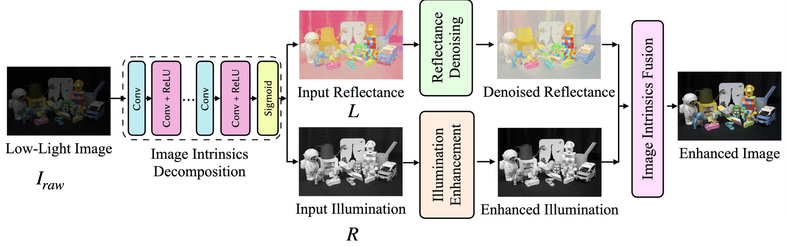 Conference Paper
Vijayalaxmi Ashok Aralikatti, Jagadeesh Kalyanshetti, Nikhil Akalwadi, Shreyas Shurapali, Ramesh Ashok Tabib, Uma Mudenagudi
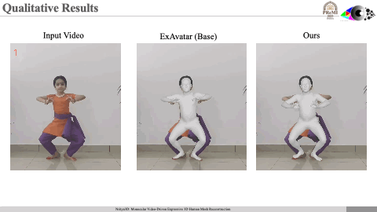 Conference Paper
Jatin Kalal, Dheeraj Hegde, Nikhil Akalwadi, Ramesh Ashok Tabib, Uma Mudenagudi
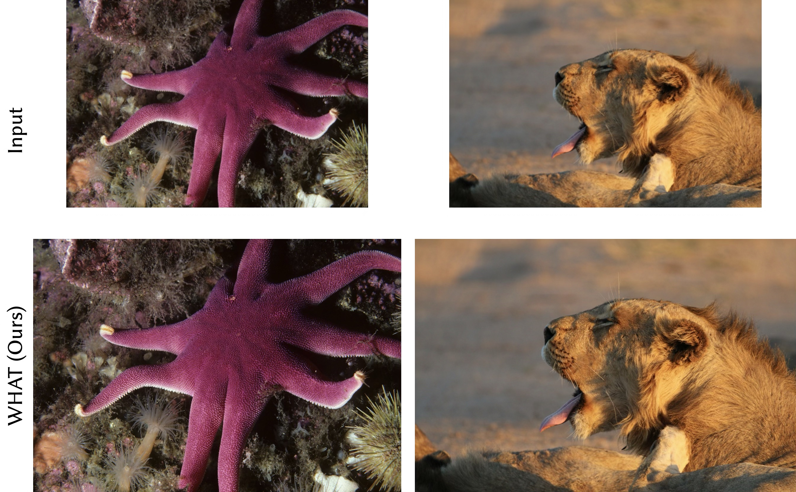 Technical Report
Z Chen, K Liu, J Gong, J Wang, L Sun, Z Wu, Radu Timofte, Yulun Zhang, ..., Nikhil Akalwadi, ...
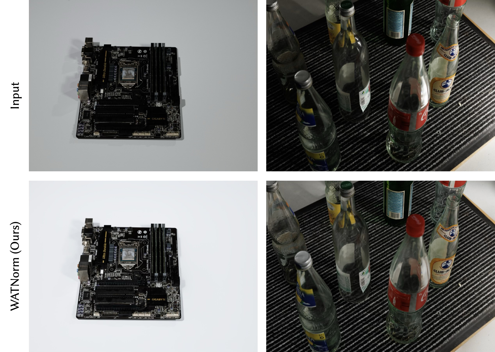 Technical Report
FA Vasluianu, T Seizinger, Z Zhou, Z Wu, R Timofte, ..., Nikhil Akalwadi, ...
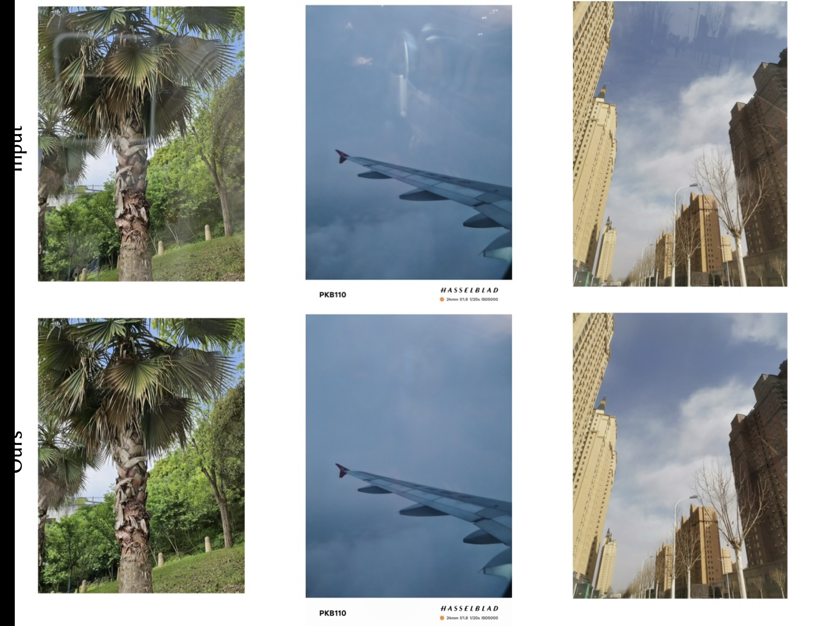 Technical Report
K Yang, J Cai, L Ouyang, FA Vasluianu, R Timofte, ..., Nikhil Akalwadi, ...
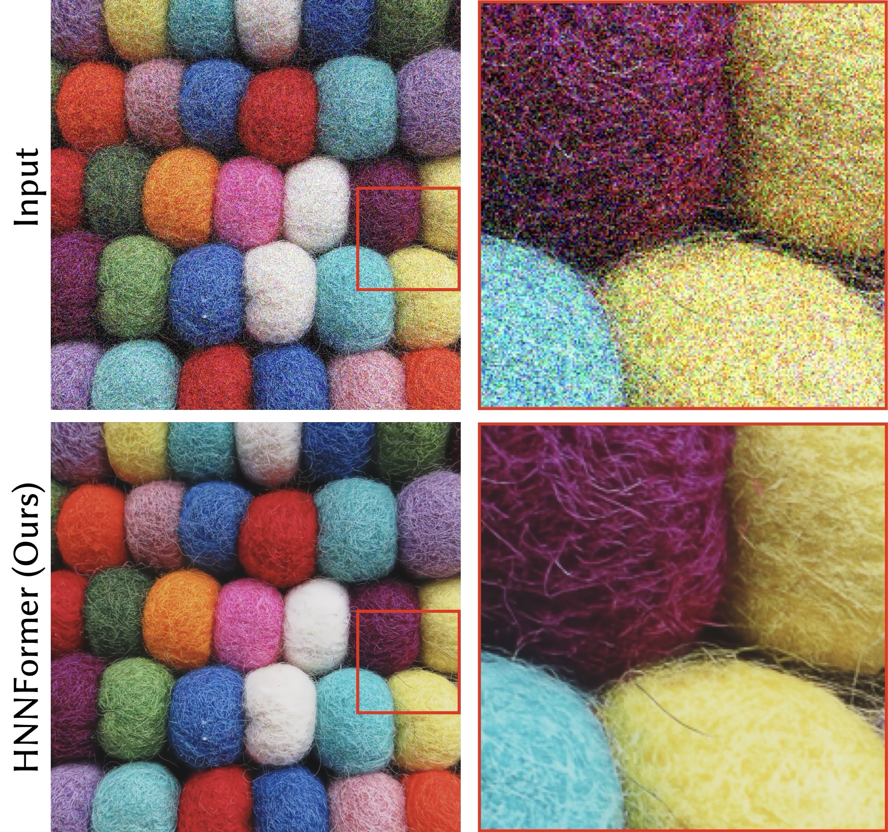 Technical Report
L Sun, H Guo, B Ren, L Van Gool, R Timofte, ..., Nikhil Akalwadi, ...
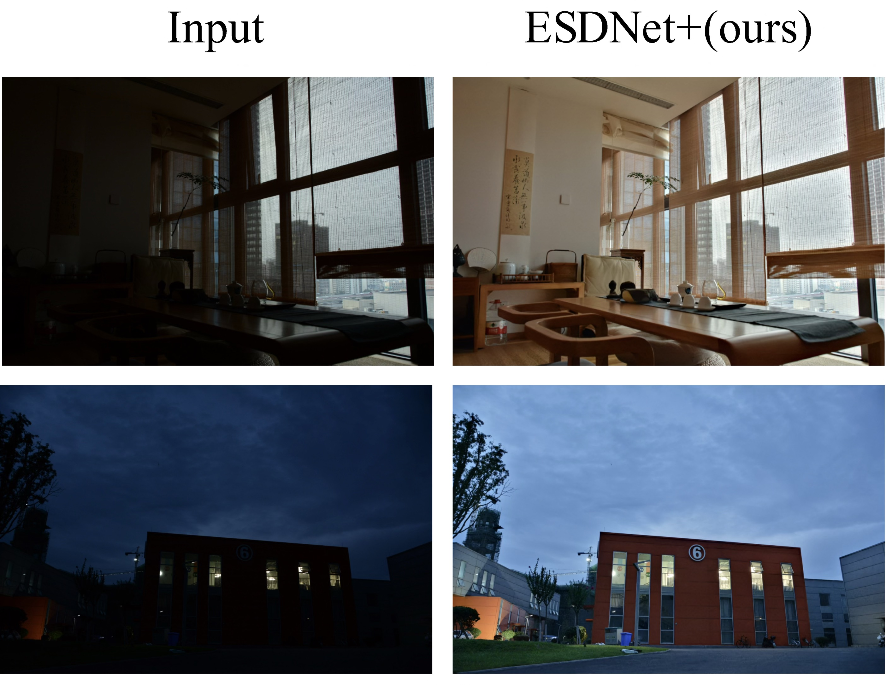 Technical Report
Xiaoning Liu, Zongwei Wu, FA Vasluianu, Hailong Yan, Bin Ren, Yulun Zhang, Shuhang Gu, ..., Nikhil Akalwadi, Ramesh Ashok Tabib, Uma Mudenagudi, ...
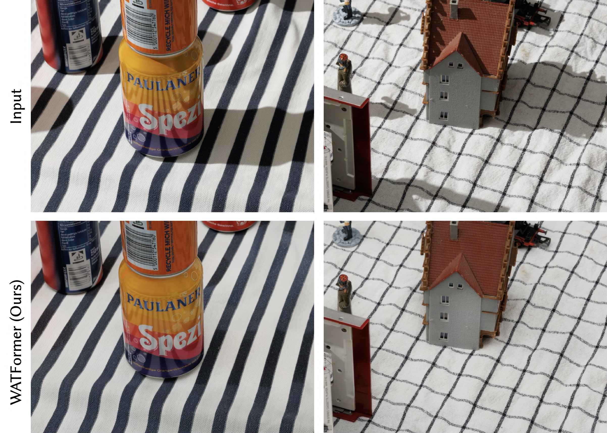 Technical Report
FA Vasluianu, Tim Seizinger, Zhuyun Zhou, Cailan Chen, Zongwei Wu, Radu Timofte, ..., Nikhil Akalwadi, Chaitra Desai, Ramesh Ashok Tabib, Uma Mudenagudi, ...
Technical Report
..., Uma Mudenagudi, Chaitra Desai, Nikhil Akalwadi, ...
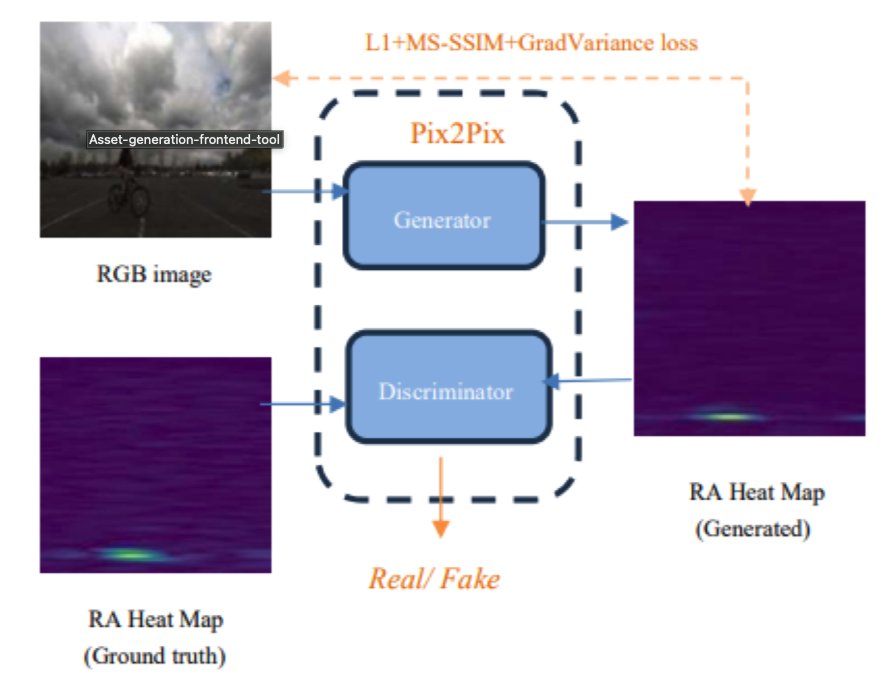 Conference Paper
S Ghosh, Nikhil Akalwadi, Uma Mudenagudi
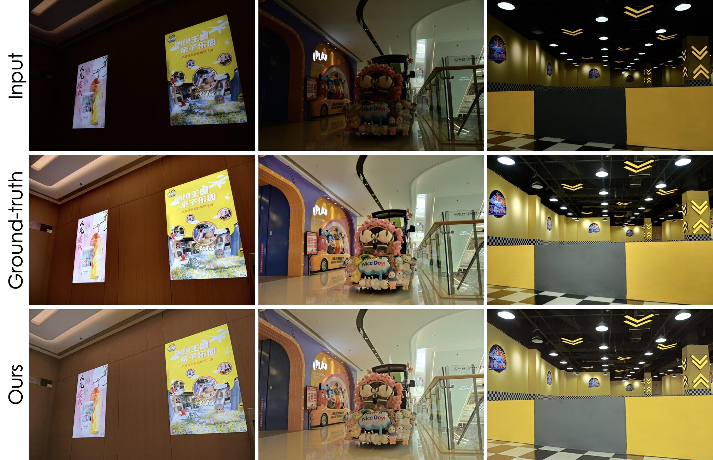 Technical Report
X Liu, Z Wu, A Li, FA Vasluianu, Y Zhang, ..., Nikhil Akalwadi, ...
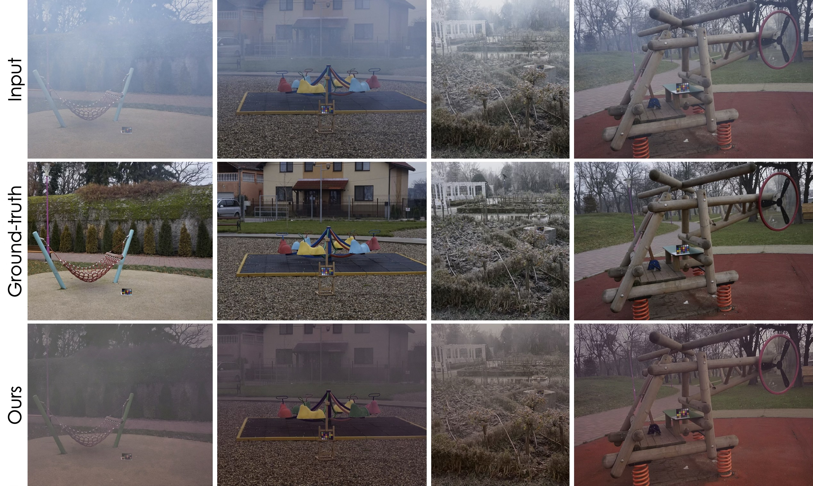 Technical Report
CO Ancuti, C Ancuti, FA Vasluianu, R Timofte, ..., Nikhil Akalwadi, ...
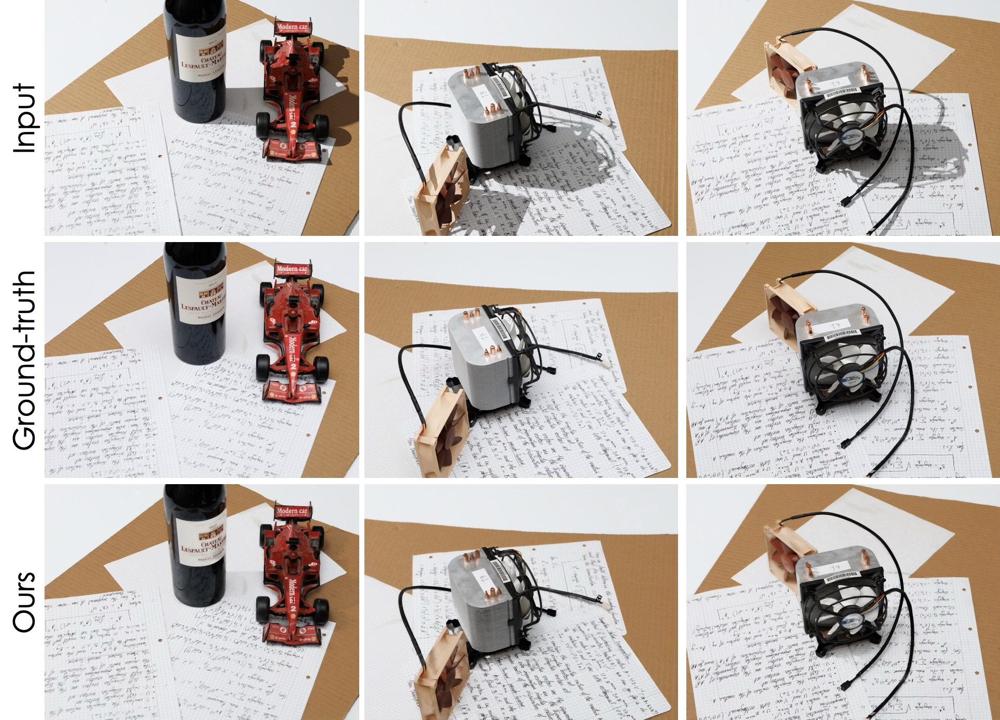 Technical Report
FA Vasluianu, T Seizinger, Z Zhou, Z Wu, ..., Nikhil Akalwadi, ...
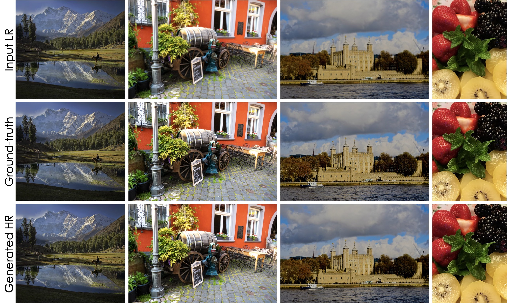 Technical Report
B Ren, Y Li, N Mehta, R Timofte, ..., Nikhil Akalwadi, ...
Technical Report
Zheng Chen, Zongwei Wu, Eduard Zamfir, Kai Zhang, Yulun Zhang, Radu Timofte, ..., Amogh Joshi, Nikhil Akalwadi, Sampada Malagi, ..., Uma Mudenagudi, ...
Workshop Paper
Amogh Joshi, Nikhil Akalwadi, Chinmayee Mandi, Chaitra Desai, Ramesh Ashok Tabib, Ujwala Patil, Uma Mudenagudi
Poster
Sampada Malagi, Amogh Joshi, Nikhil Akalwadi, Chaitra Desai, Ramesh Ashok Tabib, Ujwala Patil, Uma Mudenagudi
Conference Paper
Allabakash Ghodesawar, Vinod Patil, Ankit Raichur, Swaroop Adrashyappanamath, Sampada Malagi, Nikhil Akalwadi, Chaitra Desai, Ramesh Ashok Tabib, Ujwala Patil & Uma Mudenagudi
Workshop Paper
Chaitra Desai, Nikhil Akalwadi, Amogh Joshi, Sampada Malagi, Chinmayee Mandi, Ramesh Ashok Tabib, Ujwala Patil, Uma Mudenagudi
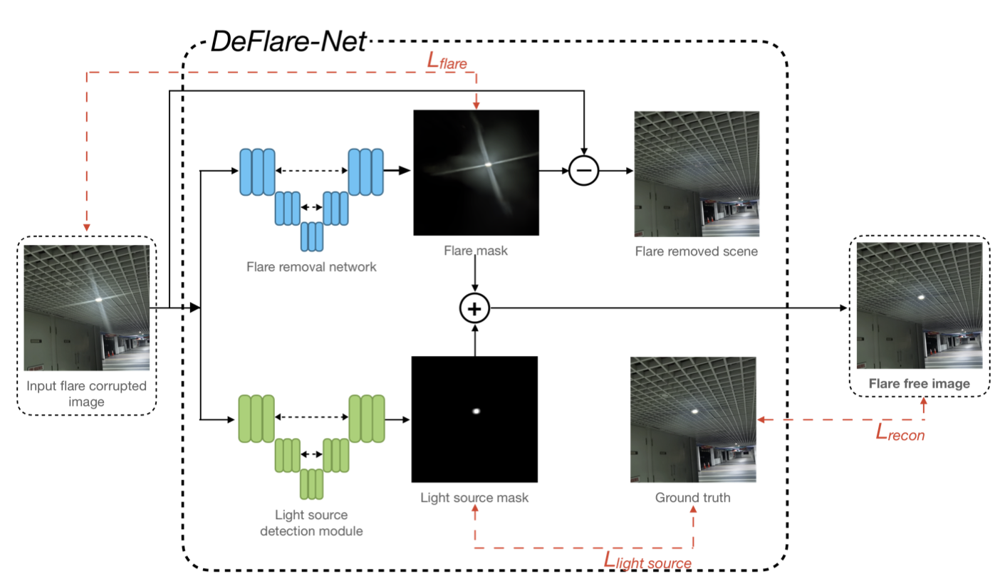 Technical Report
..., Nikhil Akalwadi, Ankit Raichur, Vinod Patil, Allabakash G, Swaroop A, Amogh Joshi, Chaitra Desai, Ramesh Ashok Tabib, Ujwala Patil, Uma Mudenagudi, ...
Technical Report
..., Chaitra Desai, Nikhil Akalwadi, Amogh Joshi, Chinmayee Mandi, Sampada Malagi, Akash Uppin, Sai Sudheer Reddy, Ramesh Ashok Tabib, Ujwala Patil, Uma Mudenagudi
|
|